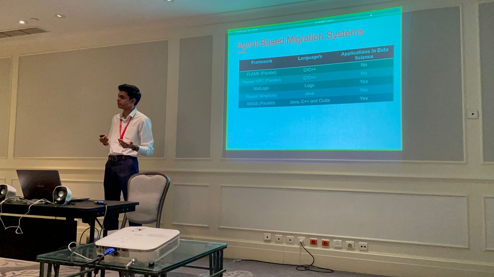

Hi there, I'm Anirudh Potturi
I take this space to share some projects I have worked on, technologies I have tinkered with, and a few of my hobbies. Hopefully, some of this work inspires you on your next project.
Hello, I'm a Software Engineer with a background in conducting research on Agent-Based Modelling, Parallel and Distributed Computing. I've enjoyed working with parallelized frameworks. My research focussed on the applications of parallelized big-data frameworks such as Hadoop MapReduce, Apache Spark, and Multi-Agent Spatial Simulations for Computational Geometry (ultimately, Data Sciences). A pun I like goes like this 'I would tell you a joke on UDP, but you might not get it'
Btw, this is a cup of Chai. Chai is what Tea is called in Hindi. Stahp calling it Chai Tea :)

Research at Distributed Systems Laboratory, University of Washington
I was a Research Assistant under Dr. Munehiro Fukuda at the DSLab in University of Washington. The research focussed on an Agent-based computing framework developed by the lab named 'MASS', short for Multi-agent spatial simulations. In essence, we dispatch autonomous goal-oriented processes (called agents) within a simulated environment. The environment is made of components called places.
After nearly a decade of development of the library and contributions of former students, we wanted to compare the programmability of our library against another framework. We initially looked at NetLogo, a single-node ABM framework built on top of ReLogo. Eventually, we selected Repast Simphony. While it is not a parallelizable framework, we were interested purely because it was based on Java, making it a fair comparison. We wanted to maintain some of the essential structural elements of MASS Java in Repast - use of Agent and Place components. I began working on implementing the Breadth-first search and the KDTree-based Range Search applications in Repast. Furthermore, I developed a static code analysis tool which helped collect detailed code metrics. This work not only filled in gaps, but also strengthened our study and took our work to the International Conference on Agents and Artificial Intelligence 2023. I travelled to Lisbon, Portugal that year and delivered a presentation as well. During my trip to Lisbon, I also had the opportunity to meet Dr. Luis Miguel Campos from PDMFC for dinner.
Lisbon, Portugal - Early 2023 ICAART

V. Mohan, A. Potturi, and M. Fukuda, “Automated agent migration over distributed data structures,” in In Proceedings of the 15th International Conference on Agents and Artificial Intelligence - Volume 1.
Masters White Paper and Quarterly reports
Whitepaper
Autumn quarter term report
Winter quarter term report